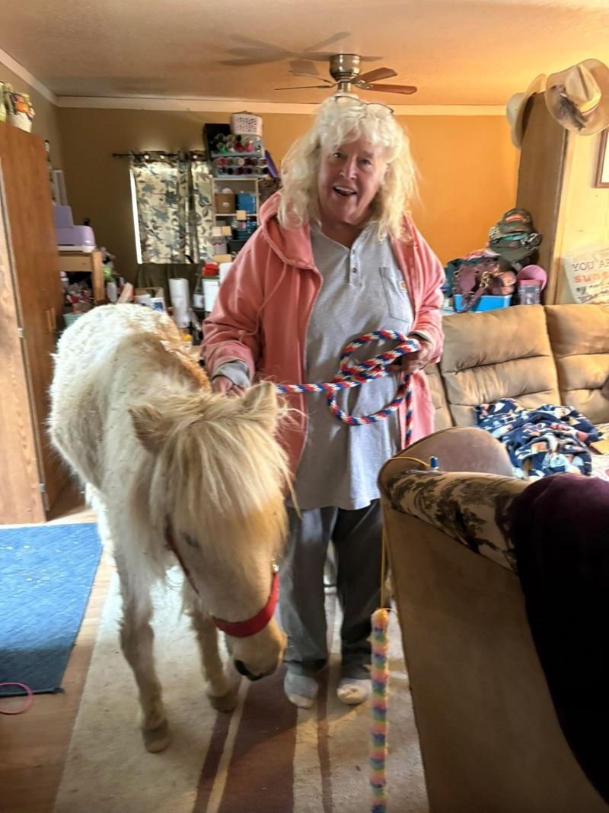
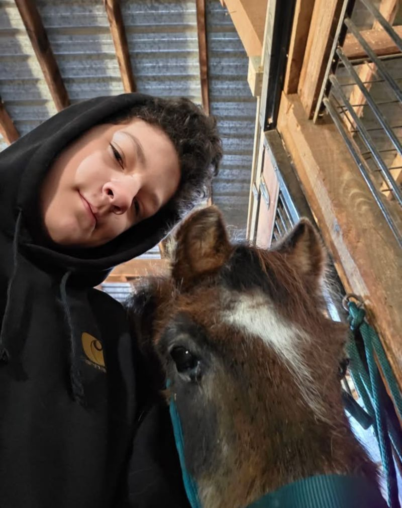
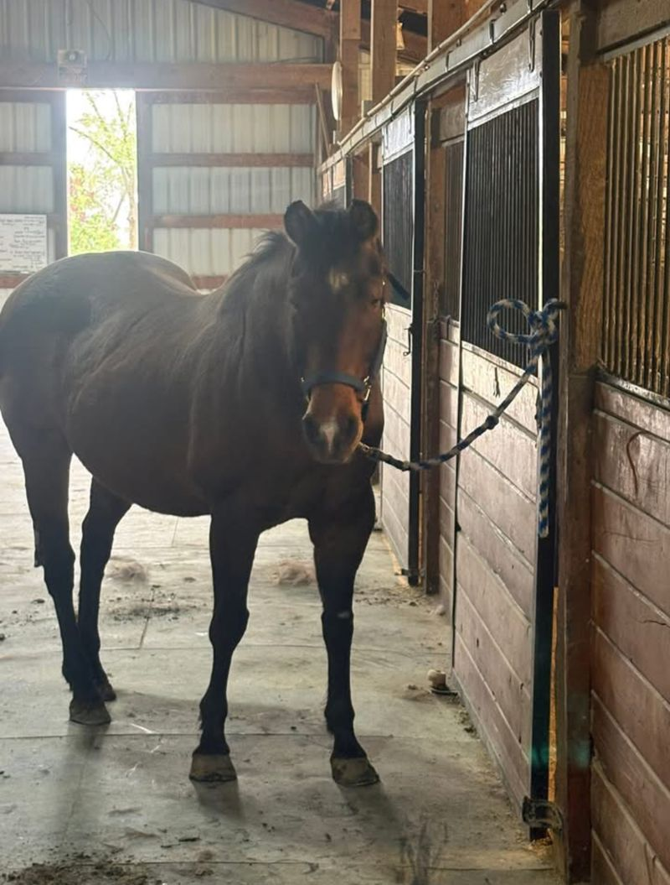
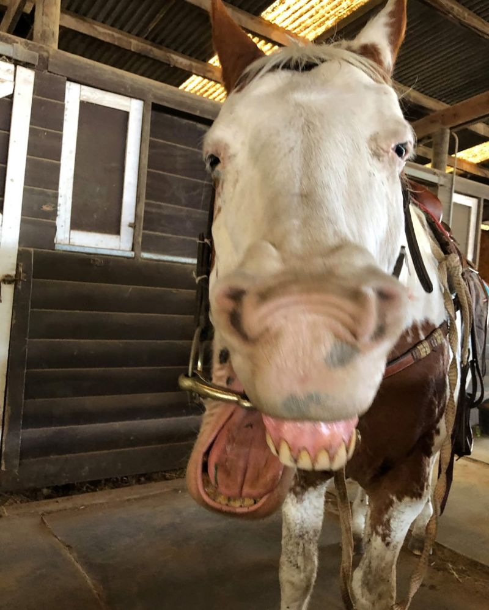

Enriching the lives of children and adults with special needs through horses. Serving Marsing and Owyhee County, Idaho since 2004.
Help Feed Our Horses Book a VisitCARE-ousel Therapeutic Riding is a nonprofit organization that enriches the lives of children and adults with special needs through equine-assisted activities and therapeutic horseback riding. We are located two miles south of Marsing in Owyhee County, Idaho.
Founded in Marsing in 2004, CARE-ousel is a registered 501(c)(3) nonprofit. Our riding instructor is PATH Intl. certified.
About 30 riders come each week, and 15 volunteers help make every session happen.
Structured riding sessions designed to improve balance, motor skills, confidence, and social interaction.
Weekend sessions with volunteers, interactive games, dances, and seasonal barn activities.
Riding and roping lessons for youth and adults, plus boarding and lessons for typical riders.
Our indoor arena is available for haul-in use for a low fee. Call to ask about availability.
Scholarships (full or partial) help make riding possible for every family. You can also give a scholarship in honor of a loved one.
Our horses are the heart of everything we do. Here are a few of them.

A small, light-colored pony and a barn favorite. Calm and well behaved, even indoors.

Pumpkin's friend and one of our newer horses. Kids love to brush him, lead him, and give him treats.

A bay mare who has joined our herd.

A paint horse with plenty of personality.
Our barn got a makeover in December 2023: refinished stall fronts and a leveled floor with new mats.
“The joy I witness on the many rider’s faces as they accomplish all their horse riding tasks and skills is priceless! … Been attending for 18 years and counting. Care-ousel quickly becomes family”
Lena W., Facebook review, October 2018
“Knowledgeable and compassionate staff, self less and caring volunteers, great personality and gorgeous horses. Wonderful learning and developing atmosphere”
Debbie Lynn P., Facebook review, January 2019
Every rider is carried by a horse who needs hay, grain, and care all year. Your gift goes straight to feeding and caring for our herd.
Feed is our biggest need, but it is not the only one. Here is where help goes:
Feed for the herd, all year round.
Hoof trims and shoes, annual vet care, and emergency care.
Well-fitting replacement helmets and tack adapted to riders' physical needs.
Replacement batteries so every rider can get on a horse.
Full or partial riding scholarships, or one in honor of a loved one.
Help cover the care of one of our horses. Call to ask how.
To give today, call (208) 530-0021. Donated supplies and services are also welcome.
Call to GivePrefer to mail a check?
Care-Ousel Therapeutic Riding, Inc.
8803 Hwy 78
Marsing, ID 83639
CARE-ousel is a registered 501(c)(3) nonprofit, so gifts may be tax-deductible. Tax ID (EIN): 77-0208652.
Volunteers help make every session safe and fun. Call or message us to learn how to get involved.
Phone: (208) 530-0021
Email: cicare2@aol.com
Address: 8803 Hwy 78 (Marsing Murphy Road), Marsing, ID 83639
Find us on Facebook: CARE-OUSEL Therapeutic Horseback Riding
Riding days and hours
Wednesday 12:00 to 5:00
Thursday 12:00 to 5:00
Friday 9:00 to 12:00
Saturday 9:00 to 12:00
Call or email to ask about visits, lessons, or volunteering.